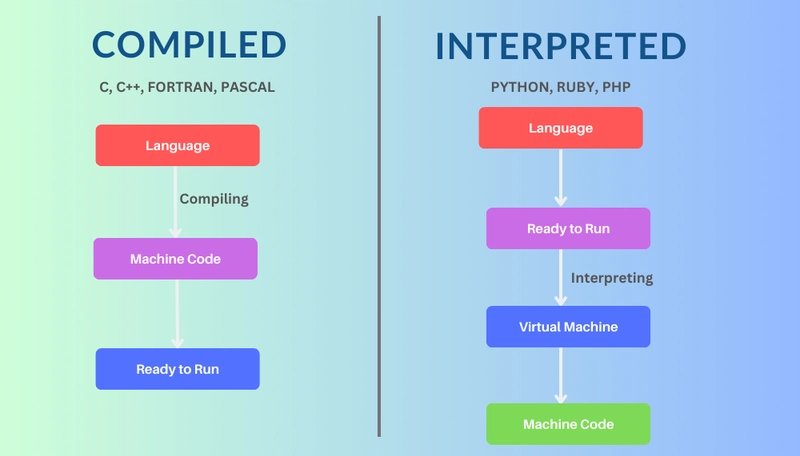

Factors for Speed
What actually makes a language fast?

- Compiled vs Interpreted - Compiled languages turn code into a binary file which is executed as straight machine code at run time. Interpreted languages are run lin by line at execution, which is slower but speeds up the iteration of the coding process.
- Strength of the Runtime/Compiler - Even if your code has the same basic structure, the way it is interpreted by a good compiler which can optimize the execution of your code can make a huge difference on its performance.
- Memory Management - Garbage Collection makes life much easier by not having to manually free memory, but it has a huge performance cost because GC languages need to add extra overhead.
- Typing - Some languages like javascript or python let you declare variables without giving an explicit type, like
let x = 5;. This is more convenient because you can change the variable into other types without having to cast new variables, but it makes the runtime have to figure out the type because you didn't tell it ahead of time what it was going to be.
- Popularity - The more popular a language is, the more people will care. Because they care more, they will build better tools and libraries for that language. So even though a language might not inherently be that good, because its so popular, people create excellent tools like javascript's v8 engine which pushes the language to its limits.
Sources:
-
https://www.freecodecamp.org/news/compiled-versus-interpreted-languages/